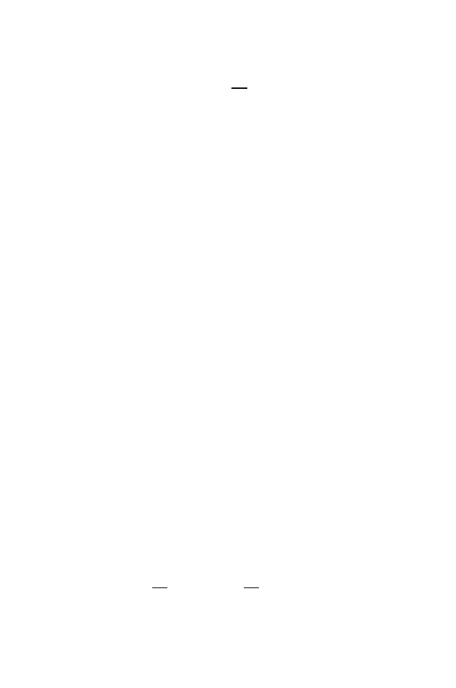

13.7 Modeling Gene Frequencies in Populations
397
h
(
n
) =
1
−
1
2
N
n
h
(0)
.
(13.21)
Variation is therefore lost at a geometric rate, and this rate is faster in a small
population than in a large one (see Exercise 8).
13.7.3 Including Mutation
The model in Section 13.7.1 does not allow for mutation. In this section,
we add
neutral mutations
to the Wright-Fisher model. Neutral mutations
do not affect the survival or reproductive success of an organism. Neutral
mutations thus can lead to a variety of alleles that are not subject to natural
selection. A subset of neutral mutations are those that occur in the third
position of codons such that the specified amino acids remain unchanged.
We employ the
infinitely many alleles model
, which states that each
mutation produces a novel allele. This implies that any
homozygous
individ-
uals are also autozygous because, under this mutation model, if two alleles
are the same, they must have descended from the same ancestor. This also
implies that alleles cannot back-mutate. Of course, the number of alleles can-
not actually be infinite, but this is a good approximation, provided the actual
number of possible alleles is sufficiently large. For example, a look at a table
of the genetic code shows that, given any specification of first and second
positions in a codon, there are on average 2
.
7 third-position variants that will
specify the same amino acid. For a polypeptide chain containing about 400
amino acid residues (a reasonable average for eukaryotes), there are about
2
.
7
400
possible alleles involving third positions of codons and producing the
same amino acid sequence. This number does not take into account amino
acid composition, which would affect the average number of third position
variants. This works out to approximately 3
.
5
×
10
172
alleles that would code
for the same polypeptide chain. This number is not infinite but still is very
large.
We now compute some population statistics in terms of this model. As
before, we track 2
N
copies of each gene at each generation. Let
µ
be the
rate of mutation of each gene; this rate is assumed to be constant for all
genes and for all generations. We obtain an expression for the probability
F
t
that two genes are identical by descent in generation
t
. This event can occur
in two ways: either both genes are copies of a single gene from generation
t
−
1 (probability 1
/
2
N
) and neither copy is mutant, or the two genes are
nonmutant copies of different genes in the previous generation and those two
genes are identical by descent. Thus,
F
t
=
1
2
N
(1
−
µ
)
2
+
1
−
1
2
N
(1
−
µ
)
2
F
t
−
1
.
(13.22)
If enough generations pass, genetic drift and mutation lead to a steady-state
condition in which the probability of homozygosity does not change. After